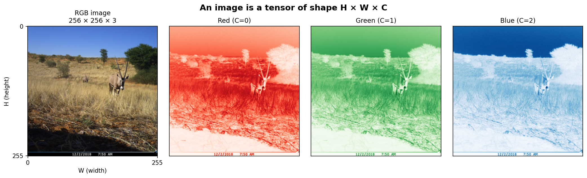
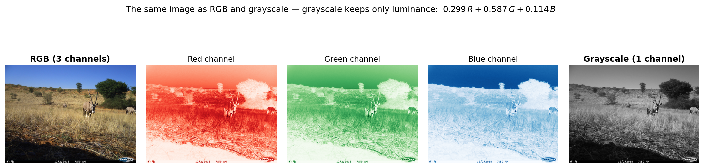
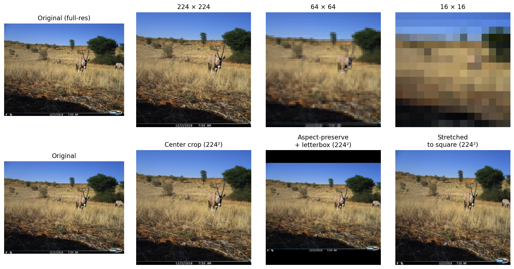
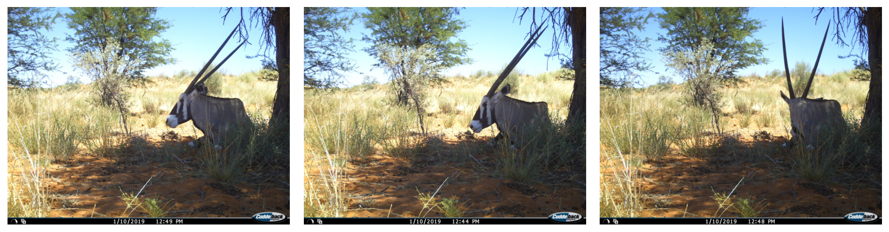
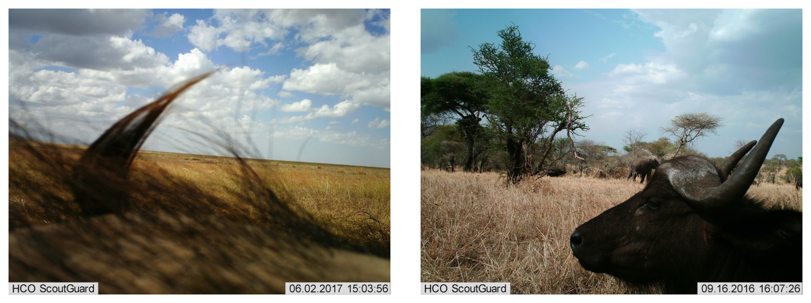

2 - Images as Data
After this lecture you should be able to:
- Describe how images are represented as tensors and explain the role of height, width, and channels.
- Distinguish between RGB and grayscale representations and their implications for model input.
- Explain the trade-offs involved in choosing image resolution for a deep learning pipeline.
- Describe the purpose of train, validation, and test splits and identify common sources of data leakage.
- Recognize class imbalance in a dataset and explain its effect on model training.
- Identify label ambiguity, label noise, and hidden biases in image datasets.
Images as Tensors:
- Digital images are 3-dimensional arrays (tensors) with shape Height × Width × Channels
- RGB images have 3 channels; grayscale images have 1 channel
- Pixel values typically range from 0–255 (integers) or 0.0–1.0 (normalized floats)
- PyTorch uses C × H × W ordering; NumPy and PIL use H × W × C
Resolution:
- Higher resolution preserves more detail but increases memory and compute requirements
- Models typically require a fixed input size — images must be resized
- Resizing can distort aspect ratios or discard important fine-grained information
Labels and Dataset Splits:
- Labels map images to class indices (e.g., 0 → “empty”, 1 → “deer”, 2 → “fox”)
- Train split: used to optimize model parameters
- Validation split: used for hyperparameter tuning and early stopping
- Test split: held out for final, unbiased evaluation
- Data leakage occurs when information from validation or test sets influences training
Dataset Quality:
- Class imbalance: uneven class distributions bias the model toward majority classes
- Label noise: incorrect or inconsistent annotations degrade training signal
- Hidden biases: spurious correlations (e.g., background, watermarks) can be learned instead of the actual target concept
- Always inspect the data before training
1 Motivation
Understanding the data is a critical task, before training any model. In computer vision, this means understanding how images are represented numerically, how datasets are structured, and what pitfalls to watch for. Many classification failures can be traced back not to the model architecture or training procedure, but to problems in the data itself: imbalanced classes, noisy labels, or subtle biases that the model exploits as shortcuts.
2 Image Representations
2.1 Images as Tensors
A digital image is a grid of pixels arranged in rows and columns. Each pixel holds one or more numeric values representing color intensity. This grid can be described as a three-dimensional array, a tensor, with dimensions for height, width, and channels.
Figure 1 illustrates the tensor structure of an RGB image. The height and width correspond to the spatial dimensions, while the three channels encode red, green, and blue intensity values.

Pixel values are typically stored as 8-bit unsigned integers in the range \([0, 255]\). For model training, these are usually normalized to floats in \([0, 1]\) or standardized to zero mean and unit variance.
2.1.1 Shape Conventions
Different libraries use different axis orderings for image tensors. This is a common source of bugs when moving between frameworks:
- NumPy / PIL: H × W × C (height, width, channels) -> channels last
- PyTorch: C × H × W (channels, height, width) -> channels first
A PyTorch tensor representing an RGB image of size 224 × 224 has shape (3, 224, 224), while the same image in NumPy has shape (224, 224, 3).
🤔 Think About It
A batch of 32 RGB images, each 224 × 224 pixels, is loaded into PyTorch. What is the shape of the resulting tensor?
Answer
The batch tensor has shape (32, 3, 224, 224) — batch size × channels × height × width.
PyTorch always prepends the batch dimension. This convention enables efficient parallel computation on GPUs.
🤔 Think About It
How would an MRI scan be represented as a tensor? Does the standard H × W × C representation still apply, and what would the “channels” correspond to?
Key considerations
The tensor paradigm generalises naturally to medical imaging — it just adds axes.
- Single 2-D slice: A single MRI slice is a grayscale intensity image: shape H × W (or H × W × 1 if an explicit channel axis is kept).
- Full 3-D volume: A complete MRI acquisition is a stack of slices — shape D × H × W, where D is the number of slices (the depth axis). Alternatively written H × W × D depending on the library convention.
- Multi-sequence acquisition: Clinical MRI is typically acquired in multiple sequences (T1, T2, FLAIR, DWI, …), each sensitive to different tissue properties. The sequences act as additional “channels”, yielding shape D × H × W × C — directly analogous to the channel axis in RGB, just with medically meaningful channels instead of colour primaries.
- 4-D time series (fMRI): Functional MRI adds a time axis, giving shape T × D × H × W.
The key insight is that the H × W × C abstraction is not specific to colour images. Any multi-channel spatial measurement — MRI sequences, satellite spectral bands, depth maps paired with RGB — fits the same tensor structure. The number of spatial axes and their physical meaning change; the framework stays the same.
2.2 Color and Channels
The number of channels depends on the color representation. The most common formats are:
- RGB: 3 channels (red, green, blue). Each channel encodes the intensity of one color component. The combination of all three channels produces the perceived color at each pixel.
- Grayscale: 1 channel. Each pixel holds a single luminance value.
Figure 2 illustrates the difference. The RGB image stores three separate intensity maps, while the grayscale version compresses all color information into a single channel.

🤔 Think About It
Are 1 and 3 the only possible numbers of channels? Think of other imaging modalities you might encounter in practice.
Answer
No — the number of channels depends entirely on the sensor and task:
- 1 channel: grayscale photo, depth map, thermal/infrared, most medical scans (X-ray, ultrasound frames)
- 3 channels: RGB (or HSV, Lab — still 3 channels, different encoding)
- 4 channels: RGBA (adds an alpha/transparency channel), or RGB + near-infrared
- N channels (tens to hundreds): multispectral and hyperspectral imaging (remote sensing, agriculture, astronomy)
The tensor shape H × W × C generalizes to all of these — only C changes.
Beyond standard photography, other imaging modalities produce images with different channel structures:
- Infrared: captures thermal radiation, often used in night-vision or satellite imagery
- Depth maps: encode distance-to-camera as pixel values
- Multispectral / hyperspectral: tens to hundreds of channels capturing narrow wavelength bands, common in remote sensing and agriculture
The key insight is that regardless of the modality, the data structure remains the same: a tensor of shape H × W × C. The number of channels changes, but the processing paradigm does not.
RGB is also not the only way to encode color. Alternative color spaces rearrange the same information along more perceptually meaningful axes — for example, HSV (Hue-Saturation-Value) separates color identity (hue) from brightness (value), which can be useful for color-based retrieval, rule-based segmentation, or hue-preserving data augmentation.
2.3 Resolution and Resizing
Image resolution — the number of pixels along height and width — directly affects both the amount of visual detail and the computational cost. Figure 3 illustrates the same image at different resolutions.

Most deep learning models require a fixed input size. Since real-world image datasets contain images of varying dimensions, resizing is an unavoidable preprocessing step. This introduces practical trade-offs:
- Higher resolution preserves fine-grained details (e.g., small objects, textures) but requires more memory and compute.
- Lower resolution is faster and lighter but may discard information critical for the task.
- Aspect ratio distortion occurs when images are resized to a square input without preserving proportions. This can deform objects and change their visual appearance.
Common strategies include resizing the shorter edge to the target size and center-cropping, or resizing with padding to preserve the aspect ratio.
3 Image Datasets
3.1 Labels and Classes
In supervised learning, each image in the dataset is associated with a label — typically an integer index that maps to a class name. For example, in a camera-trap dataset the mapping might be:
| Index | Class Name |
|---|---|
| 0 | empty |
| 1 | deer |
| 2 | fox |
| 3 | badger |
| 4 | bird |
The choice of classes is itself a design decision. Finer-grained class definitions (e.g., distinguishing between red deer and roe deer) require more training data and may introduce label ambiguity. Coarser definitions (e.g., simply “animal” vs. “empty”) are easier to annotate but less informative.
In single-label classification, each image belongs to exactly one class. In multi-label classification, an image can belong to multiple classes simultaneously, for example, a camera-trap image showing both a deer and a bird.
3.2 Dataset Splits
A well-designed dataset is divided into three non-overlapping subsets, each serving a distinct purpose:
- Training set: used to optimize the model’s parameters via gradient descent. The model sees these images repeatedly during training.
- Validation set: used to tune hyperparameters (learning rate, architecture choices, augmentation strategies) and to monitor for overfitting. The model never trains on these images, but they influence decisions during development.
- Test set: held out entirely until final evaluation. Provides an unbiased estimate of how the model will perform on new, unseen data.
The split strategy matters. Random splitting may not be appropriate for all datasets. Two important considerations:
- Stratified splits ensure that each split has roughly the same class distribution as the full dataset. This is especially important when classes are imbalanced.
- Grouped splits ensure that related images end up in the same split. For example, if a camera trap captures multiple images of the same animal within seconds, these near-duplicates should all be in the same split — otherwise the model can appear to generalize when it is actually memorizing specific individuals.
Figure 4 shows three frames captured within a few seconds of each other by the same camera trap. Although each frame is technically a distinct image file, they depict the same individual in the same scene. A grouped split keeps all three in the same set (train, validation, or test) so that the model cannot see one frame during training and be evaluated on a near-duplicate.

3.3 Data Leakage
Data leakage occurs when information from the validation or test set inadvertently influences the training process. A concrete camera-trap example makes this easy to see: the three frames in Figure 4 come from a single trigger event. If we shuffle all images and split randomly, frame 1 may land in the training set while frames 2 and 3 land in validation. The model never has to generalize — at evaluation time it is effectively being shown images it has already seen. Accuracy on the validation set looks excellent, but performance on a truly new event collapses.
In image datasets, common sources of leakage include:
- Near-duplicate images across splits (e.g., consecutive frames from a video or a camera-trap burst)
- Images from the same location or subject appearing in both train and test sets
- Preprocessing statistics (mean, standard deviation) computed on the entire dataset rather than on the training set alone
Leakage leads to overly optimistic evaluation metrics that do not reflect real-world performance.
🤔 Think About It
A dataset of dermoscopy images (skin lesion photographs) is collected from 500 patients, with some patients having multiple images taken at different visits. The images are randomly shuffled and split 80/10/10 into train/validation/test. What could go wrong?
Key considerations
Multiple images from the same patient may end up in different splits. Since images from the same patient often share visual characteristics (skin color, mole patterns, lighting conditions from the same clinic), the model may learn to recognize patients rather than lesions. Evaluation metrics will be inflated because the model has effectively seen “similar” images during training.
The correct approach is to split at the patient level: all images from a given patient go into the same split.
3.4 Class Imbalance
Real-world image datasets are rarely balanced. Some classes naturally occur much more frequently than others. Figure 5 illustrates a typical camera-trap dataset where the majority of captured images are empty (no animal present).

Class imbalance has direct consequences for training:
- A model trained on an imbalanced dataset tends to predict the majority class more often, since this minimizes the overall loss.
- Rare classes receive fewer gradient updates, making it harder for the model to learn their distinguishing features.
- Standard accuracy can be misleading — a model that always predicts “empty” may achieve 90% accuracy while being completely useless for the actual task of species identification.
Common mitigation strategies include:
- Oversampling minority classes or undersampling majority classes
- Weighted loss functions that assign higher penalties to errors on underrepresented classes
- Evaluation metrics beyond accuracy, such as per-class precision, recall, and F1 score
3.5 Label Quality and Ambiguity
Labels in real-world datasets are created by human annotators — and humans make mistakes. Label noise refers to incorrect annotations in the training data. Even small rates of label noise can affect model performance, particularly for classes that are visually similar.
Figure 6 illustrates cases where the correct label is genuinely debatable.

Sources of label noise include:
- Inter-annotator disagreement: different annotators assign different labels to the same image, particularly for borderline cases
- Systematic errors: an annotator consistently confuses two similar-looking classes
- Ambiguous category boundaries: the class definitions themselves are unclear or overlapping
Notably, models trained on noisy labels tend to first learn the “clean” patterns and then gradually memorize the noisy examples (Arpit et al. 2017). This means that early stopping can partially mitigate the effects of label noise.
The practical takeaway: always inspect the data before training. Visualize samples from each class, check for obvious mislabels, and examine the boundary cases.